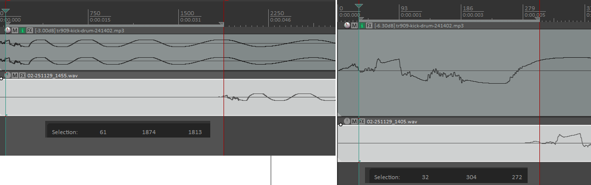
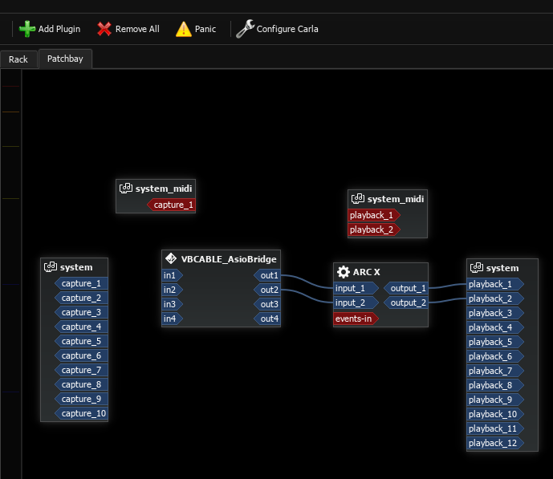
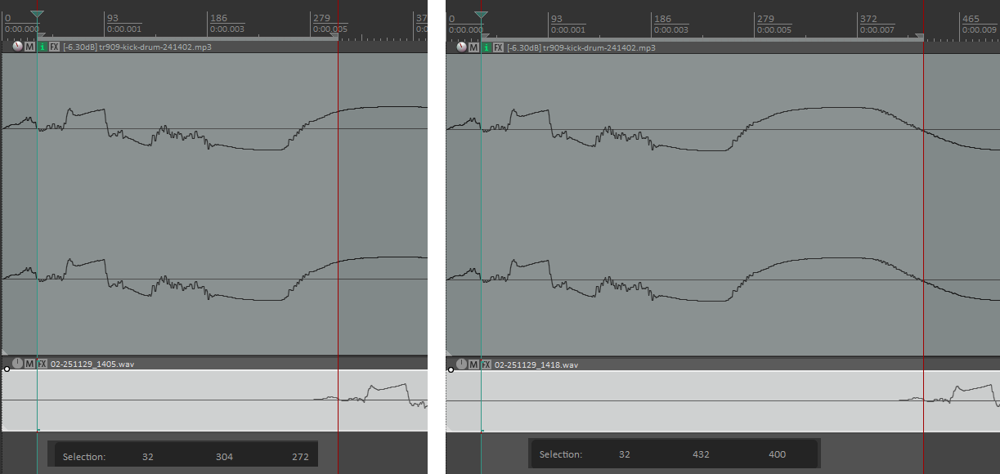

I've been working on my musical education lately. After hurting my hand I haven't really been able to practice guitar like I want, so I started learning synthesizers. My hand has slowly been recovering (yay!) and I want to be able to play both guitar and synthesizers. I've been doing that, sometimes to my frustration, on Windows.
Linux audio is in kind of a weird state. In terms of system and software it's a little annoying. USB audio works fine, but it has to be USB. Super low latency Thunderbolt interfaces (like the PreSonus Quantum 2626, my ideal) just don't work at all, you need either Windows or Mac. (PreSonus, if you're reading this, get with the program already and release Linux drivers!) Software plugins are the same way, almost nobody commercially is releasing a Linux build even though the far-and-away most popular framework supports it natively. There's solutions like yabridge but they add CPU performance penalties. What Linux does have going for it though, is Pipewire.
Pipewire is this snazzy audio subsystem that lets you take sound coming out of any program or microphone and direct it into any other program or speaker, and it does it all without any additional latency. There's somewhat more to it than that, but that's the elevator pitch. And it is so convenient! I can send all my inputs through a compressor or a limiter, and all my outputs through a system-wide equalizer. Nothing you couldn't do with a DAW, but it works on everything on the system. It isn't limited to plugins you'd load in your favorite DAW.
Windows on the other hand, is a nightmare. It has multiple questionably-compatible sound subsystems, and trying to do something as simple as getting a program to send sound out of a speaker instead of your headphones is so painful that everyone has to use a third-party program just to accomplish this! That's not even getting to the latency, which is horrendous. I don't want to be playing my guitar or software synthesizer through this.
ASIO is Yet Another sound subsystem for Windows, developed by Steinberg (owned by Yamaha). Through a variety of techno mumbo-jumbo and being entirely in userspace, it bypasses all the latency issues of the multiple Windows subsystems. It's something of an industry standard: basically any commercial audio interface will come with a specialized ASIO driver. This lets you output sound into it and it Just Works, with the best possible latency. For example, here's the latency numbers for my system. I have REAPER, my DAW, sending a signal out my audio interface, a Behringer UMC1820. The signal then comes back in and is recorded into REAPER. The difference is the latency. (By the way, if anyone knows how to do this faster than manually matching sample points in REAPER, please let me know, because this is a pain in the ass.) The left side is with the Windows native APIs, and the right side is with ASIO.
My interface sample rate is 48khz, so that translates into 5.66 milliseconds under ASIO, and 37.7 msec under Windows native API. That's a pretty massive difference! It makes a huge difference when it comes to usability as well. For me 5.66 milliseconds or so is about my limit before I start noticing latency when playing an instrument, meanwhile the Windows native latency is practically unplayable. Note that I use a buffer size of 64 samples for this test; I could probably get a lot better on ASIO by dropping to 32 (maybe 4msec or so). Now that I've done this, I'll probably do exactly that.
This is all well and good, but where does the subject of this post come in? Well, that's due to further dissatisfaction. My "studio" is a tiny little room in this house that serves double-duty as our library. It just so happens to have a small corner cutout, making the room L-shaped, where we had enough free space that I could stick my desk and speakers. Music studio? Music room? Hah, I would be so lucky! What I have here is a music corner. And putting your setup in a room corner pretty much ignores every single piece of advice in the world about how to set up a music room.
When practicing guitar or synthesizer, or even just listening to music, I noticed that some sounds would create serious echoes. It would sound like blowing into a glass tube. Not really surprising that this corner setup would have some serious sonic deficiencies! Some testing with a spectrum analyzer revealed that it would be centered around 130 Hz. Testing with Room EQ Wizard confirmed this, and some other problem areas. What to do?
This is where a dedicated person would start investing in some acoustic treatment to make the room sound good. I might be dedicated, but I'm also very cheap. I figure that the only place that matters that the room sounds okay is the place that I'm actually sitting in, so I just have to make that particular spot sound acceptable. Can we set up an equalizer profile to make the sound okay here?
As it turns out, yes. There's a lot of ways to do this. I chose to use IK Multimedia ARC X, because I happened to get it for free when I purchased another piece of their software (Amplitube 5). It's a pretty nifty piece of software: you fire it up, use a measurement microphone (I chose a Behringer ECM8000, because again, I'm cheap) to take several measurements around your listening area, and it generates an equalizer profile that should correct that position into something reasonably flat-sounding. That's the theory, anyway.
ARC X, or rather, Windows, has a flaw. There's no way to just have the entire system's worth of sound flow into it to be corrected before going out my speakers. ARC X itself is meant to be used as a plugin in a DAW, taking all audio on the master bus and applying the final correction before going straight to speakers. Remember Pipewire on Linux? Sure would be nice if we had that on Windows. Luckily, we can get something like it.
JACK can be thought of as the predecessor to Pipewire and it operates on a similar concept. Take audio out of program X, stick it into program Y. There's a lot under the hood there but that's the basics. Turns out it works just as well on Windows as it does on Linux! Well, sort of.
Windows doesn't really know what to do with JACK. It doesn't speak any of the native Windows APIs. It can't really get sound into it, though luckily you can get sound out of it into your speakers, so that's handy. JACK has a trick up its sleeve though. It exposes an extra ASIO audio interface, acting sort of like a soundcard. Any program that can speak ASIO can dump its sound to that virtual soundcard, thus getting the sound into JACK. Unfortunately, not that many programs speak ASIO.
Luckily, somebody else went ahead and solved this problem. The fine folks over at VB Audio have released a donationware bit of software called HiFi Cable. This exposes a sound interface that virtually all Windows programs can speak, and sends the other end into any ASIO device. In our case, we'll hook it up to our JACK audio device. Now any Windows sound can get into JACK.
Once it's into JACK, what do we do with it? Well, the whole point of this exercise was to get it all transformed by ARC X. ARC X doesn't have a standalone mode for this. It's what's known as an audio plugin, in VST format. That's something meant to be loaded by a DAW, but we don't want to use that. We just want it to sit in the background transforming everything! What can we do?
Carla is a kind of patchbay-like system for JACK. It can handle all the routing between programs, which is really convenient for us because JACK's UI is kinda bad at doing that. What's even more convenient though, is that it can load VST plugins like a DAW can and expose them to JACK. It was written for Linux, but luckily it works on Windows too. So now we can take all that sound that HiFi Cable is dumping into JACK, and send it through ARC X that gets loaded into Carla. Then ARC X can send it right out our speakers.
Success! It no longer sounds like I'm playing music in a train tunnel whenever I hit a note or harmonic at 130Hz! The rest of the room probably sounds terrible but, who cares? I only sit in this spot anyway.
Honestly...it's kind of flaky. A lot of that has to do with Windows, which has trouble initializing things in order. JACK has to launch Carla and HiFi Cable, in that order, which I do by means of a VBS script that JACK launches at startup. Resuming from sleep mode is a real problem; oftentimes HiFi Cable will just stop responding and need to be forcefully killed and restarted. From a fresh boot though, works great!
Latency's not bad, either. JACK advertises itself as theoretically zero latency. That's great and all but theoretically I'm the world's most handsome boy (according to my mother) and we all know how that turned out. Here's the same comparison I made before, between REAPER going in/out the raw Behringer ASIO interface and going through JACK before going out. ARC X and HiFi cable aren't included in this, because they aren't used in any latency-sensitive applications and I'll run ARC X as a plugin in REAPER when I'm doing music work.
So that's 5.66 msec for our audio interface by itself, and 8.33 when going through the extra layer of JACK. Not exactly zero latency but honestly, not that bad. Remember you're going to be bypassing JACK entirely and working directly (ASIO in -> DAW -> ASIO out) when doing actual music work.
Thanks JACK! And Carla! And VB Audio! You've made Windows usable for general-purpose audio for me!
There's a few things that aren't great that I wish would improve.
First of all, Linux support. PreSonus, get some drivers for your Quantum 2626 and other thunderbolt devices! If you do this, I will personally buy a 2626 and tell every single person I know to do so as well. Plugin developers, you too. Where's the Linux support? I buy plugins extremely rarely because there's no Linux support. Melda, if you start releasing Linux versions of your plugins I will personally buy your complete bundle. IK Multimedia, you guys are a big commercial outfit, let's get Linux support into Amplitube. C'mon already.
On the Windows side, I figure Windows will never get any better because lol. There are a few things that can be done to improve this stack though.